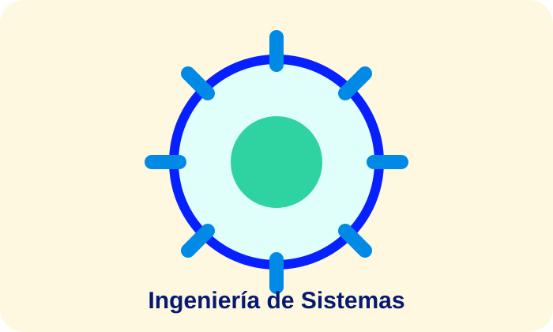
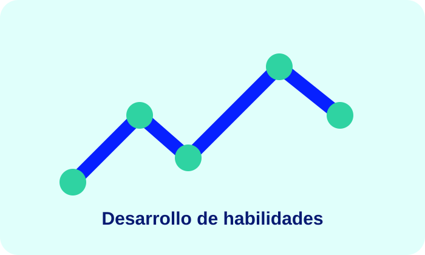
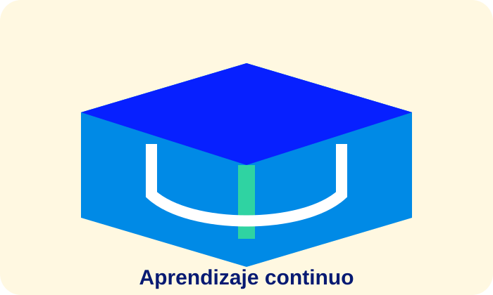
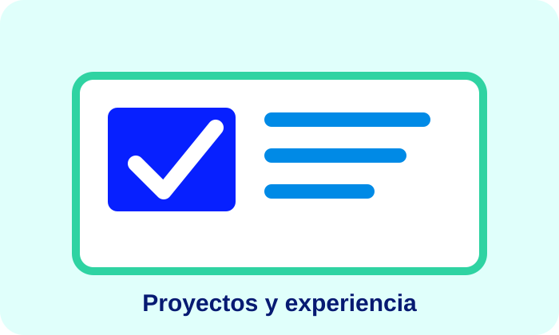

Formación
La carrera permite estudiar conceptos y métodos que sirven como base para comprender y desarrollar soluciones tecnológicas.
Por Deiby Estiven Sandoval — FESNA Virtual
La Ingeniería de Sistemas integra conocimientos relacionados con tecnología, software, datos, infraestructura y solución de problemas. La formación académica proporciona fundamentos que pueden ser aplicados posteriormente en diferentes contextos profesionales.





La carrera permite estudiar conceptos y métodos que sirven como base para comprender y desarrollar soluciones tecnológicas.
La formación y la experiencia laboral pueden complementarse: los conocimientos se aplican en proyectos y las situaciones prácticas generan nuevas necesidades de aprendizaje.